Ortodontia e Ortopedia Facial
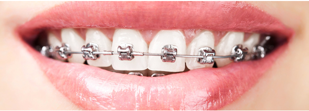
Ortodontia é a área da odontologia que cuida da prevenção, interceptação e/ou correção das más-oclusões dentárias (irregularidades dos dentes) e dos posicionamentos funcionais e estéticos incorretos, que podem ser consequência de um desenvolvimento inadequado, perda de dentes ou crescimento anormal dos ossos maxilares.
Podemos dividir a ortodontia em três partes:
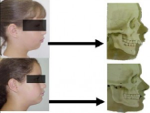
1. Ortopedia Funcional dos Maxilares:Tratamento realizado com aparelhos móveis em pacientes que estão em fase de crescimento (dentição mista). Ele visa a correção das deformidades ósseas.
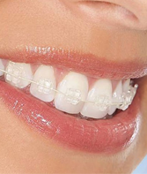
2. Ortodontia Corretiva Fixa:Uso de aparelhos ortodônticos fixos para correção do mau posicionamento dental (dentes tortos).
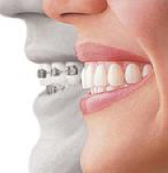
3. Alinhadores Estéticos:Modernos, os alinhadores, ou “aligners”, são aparelhos muito discretos. Além disso, são alternativas ao tratamento ortodôntico convencional (aparelho fixo). Estética e eficiência associadas para obtenção do resultado final desejado.
DTM e Dor Facial

ATM significa articulação temporomandibular. Essa articulação é responsável por todos os movimentos que você faz com a boca, existindo uma em cada lado do rosto (em frente de cada orelha). As doenças dessa articulação e dos músculos que fazem esses movimentos da boca são chamadas de disfunções temporomandibulares (DTM). Elas geralmente causam sofrimento a milhões de pessoas ao redor do mundo, diminuindo a qualidade de vida e restringindo o convívio social. Um dos sintomas mais comuns das DTMs são as dores de cabeça (de origem não neurológica). Muitos pacientes apresentam esse sintoma e não sabem que pode ser causado pela DTM.
Embora atinja milhões de pessoas no mundo inteiro, a DTM é uma doença pouco conhecida. Movimentos desnecessários que fazemos com a boca, como: mascar chicletes, roer unhas, morder objetos, etc. são situações que facilitam o surgimento da disfunção. O bruxismo, o ranger dos dentes que algumas pessoas realizam involuntariamente durante o sono, também é um dos principais fatores que causam DTM.
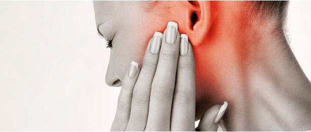
O treino para a eliminação desses hábitos, ou a proteção dos dentes e dos músculos para os que apresentam o bruxismo, pode ser a chave para o alívio dos sintomas da disfunção. O paciente com DTM geralmente é um doente crônico que demora anos para buscar tratamento.
Como os sintomas são muito subjetivos e podem estar ligados a outros problemas médicos (depressão, problemas otológicos ou reumatológicos), o dentista, muitas vezes, é o último profissional da saúde a ser procurado.
Endodontia
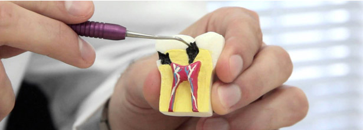
A Endodontia é uma especialidade na odontologia popularmente conhecida como tratamento de canal, sendo responsável pela prevenção e tratamento das doenças da polpa do dente.
O tratamento de canal (endodontia) hoje é considerado uma intervenção indolor, além de rápida, sendo realizada em apenas uma sessão, em grande parte dos casos, por ser efetuada com os mais avançados equipamentos da área, como localizador apical, instrumentação com movimento reciprocante, raio-x digital, etc.
Esse tipo de tratamento também pode ser necessário em casos de traumas dentais, infecções ou por necessidades restauradoras.
Reabilitação Bucal
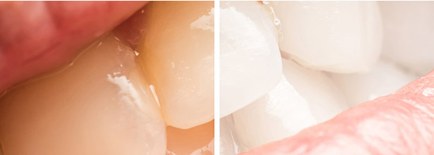
A reabilitação bucal consiste em uma série de procedimentos/tratamentos que incluem prótese dentária, restaurações e/ou implantes e/ou ortodontia, tudo com um olho carinhoso na estética, visando recuperar ou melhorar a saúde bucal dos pacientes e a função de seu aparelho mastigador.
Esses pacientes normalmente apresentam inúmeras queixas que variam desde ausências dentárias, problemas de ordem muscular e até dores frequentes na face e cabeça.
Problemas como esses podem causar diversos prejuízos estéticos e funcionais, comprometendo principalmente a beleza do sorriso e a qualidade da mastigação.
Próteses sobre implantes
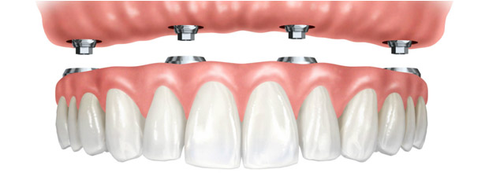
Trata-se da substituição de dentes ausentes utilizando-se pinos de implantes como sustentação. Uma vez executado com materiais de alta qualidade, e por um profissional competente, o procedimento é seguro e confiável.
O principal objetivo desse procedimento é promover a reabilitação bucal em todas as suas funções: estética, fonética e mastigação. Além disso, ele permite a reposição, de forma indireta, dos dentes ausentes ou perdidos.
Há, atualmente, dois tipos de próteses sobre implantes: fixas ou removíveis.
As fixas podem se apresentar de duas maneiras: cimentadas, produzidas para não serem removidas, e aparafusadas, que, quando necessário, são retiradas apenas pelo dentista.
As removíveis devem ser constantemente retiradas pelo paciente para a higienização.
O profissional é quem avalia e indica qual o tipo de prótese mais indicado para cada caso. É possível que, ao longo do tratamento, o tipo de prótese seja mudado.
Cirurgia Ortognática
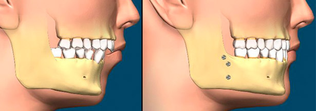
A cirurgia ortognática é indicada para pessoas com deformidades na face, quando relacionadas à má posição das arcadas dentais e suas relações, ou ainda quando temos desproporcionalidade do maxilar superior (maxila) ou maxilar inferior (mandíbula). Quando são muito projetados ou retraídos em relação ao outro e/ou à face. Casos específicos de apneia do sono também podem ser tratados com essa técnica.
Tratamento de Pacientes Especiais (Ambulatorial/Hospitalar)
Quando falamos em pacientes especiais, devemos considerar qualquer situação em que o paciente necessite de atenção e cuidados e/ou estrutura de atendimento diferentes do atendimento odontológico convencional.
Com isso, consideramos acessibilidade, quanto à mobilidade, necessidade de monitorizações diversas durante o tratamento (cardiológica, glicemia, pressão arterial, quadro de ansiedade, sangramento, etc.) de forma muito específica.
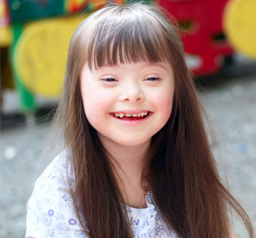
Também temos pacientes especiais com déficits intelectuais por causas diversas, sejam doenças degenerativas neurológicas, como Alzheimer, demência senil, ou mesmo congênitas, como a síndrome de down, as paralisias cerebrais
sequelas de trauma ou hipóxia, sequelas de tumor cerebral, doenças psiquiátricas, etc.
Para esses casos expostos, procedemos com o acolhimento do paciente/família, solicitamos os exames pré-operatório convencional aos cuidados do médico anestesista e elaboramos um laudo específico ao auditor do convênio médico.
Implantes/Enxertos
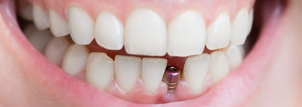
Hoje já é muito comum e bastante compreensível falarmos sobre implantes, que são suportes ou estruturas de metal posicionadas cirurgicamente no osso maxilar abaixo da gengiva. Uma vez colocados, permitem ao dentista montar dentes substitutos sobre eles. Se a estrutura óssea não oferecer condições para implantação direta, é possível fazer uso de enxertos ósseos, que podem ser autógenos (do próprio paciente) ou bovino, somado ao uso do plasma rico em plaquetas (P.R.P.). Nas cirurgias, um bioquímico acompanha o processo e colhe uma pequena porção de sangue e por um processo próprio, prepara este P.R.P., que aglutinado (autógeno ou bovino), auxiliará de forma intensa na regeneração local.
Cirurgia do Trauma
Quando se trata de cirurgia do trauma, não abrangemos somente os casos hospitalares das grandes fraturas de face que atendemos nos hospitais da região, mas também os pequenos traumas que demandam procedimentos menores ou um simples acompanhamento.
Temos uma equipe de plantão permanente, à distância nos hospitais da região (Atibaia, Bragança Paulista, Itatiba), apta e pronta para agir sempre que houver necessidade.
Doenças da Boca
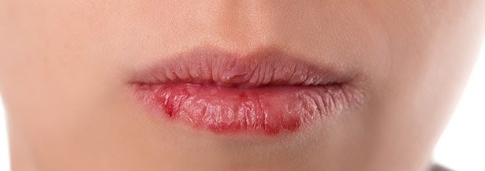
A boca pode ser afetada por doenças localizadas (que só afetam uma zona específica do organismo), é o caso de algumas infecções e feridas. Não precisamos pensar em grandes lesões (tratamos delas também), mas simples feridas que não cicatrizam, em até duas semanas, precisam ser avaliadas.
Além desse sintoma, o paciente pode apresentar o aumento de volume labial, alteração de cor de uma determinada região, alteração de sensibilidade, dor, sensação de anestesia ou formigamento, entre outros.
Também existem as doenças sistémicas (que afetam o organismo em geral) e podem causar alterações na boca. É o caso da diabetes e da leucemia, por exemplo. Dado que as primeiras manifestações destas doenças aparecem às vezes na boca, o odontologista pode detectar estes processos antes de ninguém.
Clínica Geral
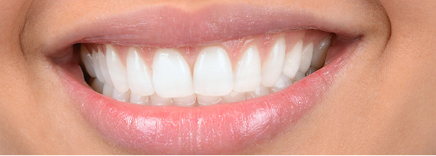
Essa especialidade tem como principal foco a prevenção, diagnóstico e tratamento de diversas doenças e desordens dos dentes e gengivas. Buscando trabalhar sempre de maneira preventiva, a clínica geral atua a partir da realização de exames regulares e manutenção da saúde bucal, que podem impedir o desenvolvimento de problemas dentários que exigem tratamentos mais complexos.
O clínico geral atua na conservação da higiene oral e saúde dentária. Ele cuida de seus pacientes por meio de diagnóstico, planejamento e execução do tratamento com os melhores recursos que a odontologia moderna pode oferecer, incluindo o apoio de dentistas especialistas, quando necessário.
Alguns dos tratamentos mais realizados por esses profissionais estão: pequenas restaurações e limpeza oral, remoção de tártaro e cáries, fluorterapia, aplicações de selante e procedimentos de urgência.
O clínico geral fornece ainda orientação em relação à higiene oral e controle de placa por meio de ações educativas e preventivas. Em diversos casos, é ele quem encaminha o paciente para o dentista especialista em outras áreas da odontologia, quando necessário, prosseguindo o tratamento bucal.
Estética/Cosmética
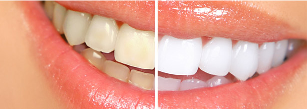
Tido como um dos mais efetivos métodos para conquistar a melhora da aparência física, além de um sorriso bonito e saudável, esse segmento da reabilitação pode aumentar a autoestima, promovendo satisfação com o corpo.
Há uma série de tratamentos odontológicos que podem ser considerados estéticos. As modernas restaurações de resina, por exemplo, são praticamente invisíveis se comparadas às de amálgama, e o mesmo se aplica às coroas, facetas laminadas e próteses fixas que podem ter a cor dos dentes originais.
Periodontia (Doenças das Gengivas)
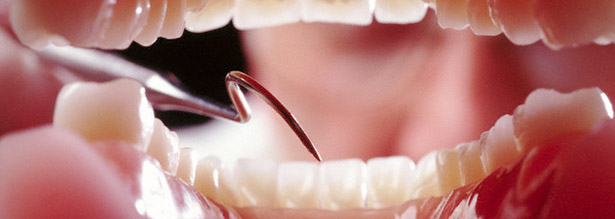
Os primeiros sinais da doença são percebidos através dos tecidos gengivais. Muitas pessoas apresentam a gengiva inflamada, a qual se caracteriza pelo aumento de volume e sangramento, chamamos essa alteração de gengivite. Sangramentos gengivais quando escovamos os dentes ou mordemos algum alimento, por exemplo, podem ser sinais de inflamação gengival (gengivite ou periodontite).
Tratamento de Pacientes Especiais (Ambulatorial/Hospitalar)
Odontologia do sono é uma área que permite ao cirurgião dentista atuar no tratamento de distúrbios respiratórios do sono como ronco, síndrome apneia obstrutiva (SAOS) e síndrome da resistência das vias aéreas superiores (SRVAS), utilizando-se de AIO (aparelho intraoral).
O aparelho é feito sob medida e é composto de duas placas, uma superior e outra inferior, que se articulam. Tendo por função, a protusão temporária da mandíbula, apenas durante o sono. O objetivo do aparelho é ampliar o espaço das vias aéreas superiores, melhorando a passagem do ar.
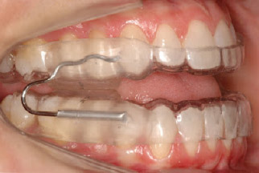
O aparelho oral deve ser confortável, feito de material resistente, podendo usar vários tipos de dispositivos de metal que permitam o movimento lateral, vertical e reposicionamento
protusivo da mandíbula, de forma que o reposicionamento seja progressivo (titulação), até a eliminação e/ou diminuição do ronco ou da apneia obstrutiva. O paciente dormirá todas as noites com o aparelho.
O tratamento da síndrome da apneia obstrutiva do sono (SAOS) e ronco envolve uma abordagem multidisciplinar obtida a partir da integração das equipes do médico especialista do sono (geralmente médico Otorrinolaringologista) e do profissional dentista altamente treinado nessa área (geralmente especialista em DTM e dor orofacial). Segundo a American Academy of Sleep Medicine, "a gestão dos distúrbios do sono por dentistas precisa ser feita com a avaliação do índice de apneia/hipoapneia por meio de um exame de polissonografia no laboratório do sono antes e após o tratamento.
 Disfunção de ATM
Disfunção de ATM